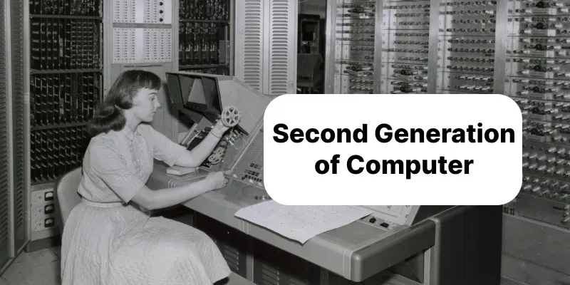
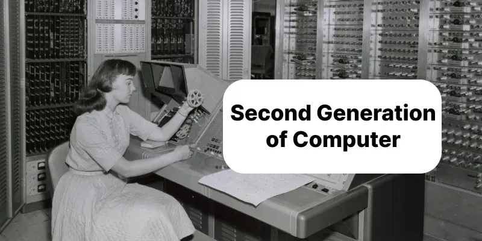

Second Generation of Computer (1956–1963)
 

Overview
Second generation computers replaced vacuum tubes with transistors, which made them smaller, faster, and more energy-efficient. They produced less heat and were more reliable, so they could run longer without failing. Programming became easier because, besides machine language, they now supported assembly language. These computers were widely used in business, science, and government.
Main Features
- Technology
- Used transistors for processing instead of vacuum tubes. Memory improved with magnetic core memory. Programs could be written in assembly language, reducing coding errors.
- Size and Power
- Much smaller than first-generation computers. Needed less electricity and produced less heat. Could fit into smaller rooms in offices or labs.
- Input & Output
- Input via punched cards, paper tape, and keyboards. Output via printers, display screens, and punched cards.
- Memory and Storage
- Primary memory: magnetic cores with larger capacity. Secondary storage: magnetic tapes and disks, allowing easier long-term data storage.
- Speed
- Faster than first-generation, capable of tens of thousands of operations per second.
- Reliability
- Much more reliable; transistors rarely failed. Required less maintenance and could run continuously for hours.
- Programming
- Allowed assembly language programming, which was easier to write and debug. Some models supported basic higher-level languages like FORTRAN and COBOL.
Examples
- IBM 1401 – Popular for business applications like payroll and inventory.
- UNIVAC II – Used in government and commercial data processing.
- CDC 1604 – Designed for scientific and engineering calculations.
- IBM 7090 – High-speed scientific computer for research and space projects.
Application Areas
- Business – Payroll, accounting, banking, inventory management
- Scientific Research – Physics, engineering, weather forecasting, space studies
- Government Work – Census processing, tax calculations, statistical reports
- Military – Missile simulations, code-breaking, defense research
Conclusion
Second generation computers were faster, smaller, and more reliable than the first generation. They made programming simpler with assembly language and were widely adopted in business, government, and scientific research. These computers paved the way for integrated circuits used in third-generation computers.
Advancements over First Generation
- Transistors replaced vacuum tubes → smaller size, less heat, better reliability
- Faster processing speed
- Memory improvements with magnetic cores
- Assembly language support for easier programming
- Wider use in business, government, and science